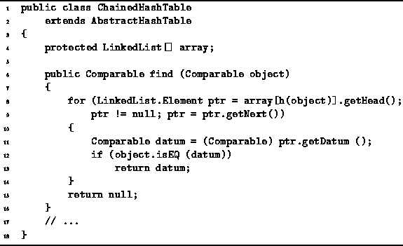
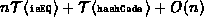

Data Structures and Algorithms
with Object-Oriented Design Patterns in Java
Data Structures and Algorithms
with Object-Oriented Design Patterns in Java
The definition of the find method
of the ChainedHashTable class
is given in Program  .
The find method takes as its argument any Comparable object.
The purpose of the find operation is to return
the object in the container that is equal to the given object.
.
The find method takes as its argument any Comparable object.
The purpose of the find operation is to return
the object in the container that is equal to the given object.

Program: ChainedHashTable class find method.
The find method simply hashes its argument to select the linked list in which it should be found. Then, it traverses the linked list to locate the target object. As for the withdraw operation, the worst case running time of the find method occurs when all the objects in the container have collided, and the item that is being sought does not appear in the linked list. In this case, the running time of the find operation is .
 Copyright © 1998 by Bruno R. Preiss, P.Eng. All rights reserved.
Copyright © 1998 by Bruno R. Preiss, P.Eng. All rights reserved.